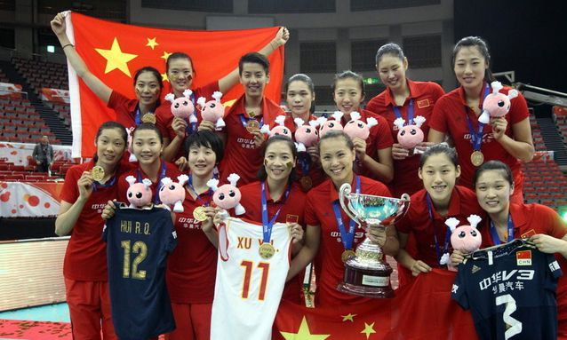

 郎平的运动员生涯辉煌无比：1981年作为绝对主力和队友一起获得第三届女排世界杯冠军，实现了中国三大球历史性的突破，她本人 获得“优秀运动员”奖。1982年再度和队友一起获得第九届世锦赛的冠军，她本人获得“最佳运动员”奖。1984年洛杉矶奥运会她作为副队长，带领中国女 排获得第23届奥运会的金牌，实现了“三连冠”的霸业！1985年第四届世界杯女排赛她作为中国女排的队长和核心，带领队友蝉联冠军，她本人获得“最佳运 动员”、“优秀运动员”两项个人奖项。 郎平的运动员生涯辉煌无比：1981年作为绝对主力和队友一起获得第三届女排世界杯冠军，实现了中国三大球历史性的突破，她本人 获得“优秀运动员”奖。1982年再度和队友一起获得第九届世锦赛的冠军，她本人获得“最佳运动员”奖。1984年洛杉矶奥运会她作为副队长，带领中国女 排获得第23届奥运会的金牌，实现了“三连冠”的霸业！1985年第四届世界杯女排赛她作为中国女排的队长和核心，带领队友蝉联冠军，她本人获得“最佳运 动员”、“优秀运动员”两项个人奖项。 郎平的运动员生涯辉煌无比：1981年作为绝对主力和队友一起获得第三届女排世界杯冠军，实现了中国三大球历史性的突破，她本人 获得“优秀运动员”奖。1982年再度和队友一起获得第九届世锦赛的冠军，她本人获得“最佳运动员”奖。1984年洛杉矶奥运会她作为副队长，带领中国女 排获得第23届奥运会的金牌，实现了“三连冠”的霸业！1985年第四届世界杯女排赛她作为中国女排的队长和核心，带领队友蝉联冠军，她本人获得“最佳运 动员”、“优秀运动员”两项个人奖项。 郎平的运动员生涯辉煌无比：1981年作为绝对主力和队友一起获得第三届女排世界杯冠军，实现了中国三大球历史性的突破，她本人 获得“优秀运动员”奖。1982年再度和队友一起获得第九届世锦赛的冠军，她本人获得“最佳运动员”奖。1984年洛杉矶奥运会她作为副队长，带领中国女 排获得第23届奥运会的金牌，实现了“三连冠”的霸业！1985年第四届世界杯女排赛她作为中国女排的队长和核心，带领队友蝉联冠军，她本人获得“最佳运 动员”、“优秀运动员”两项个人奖项。